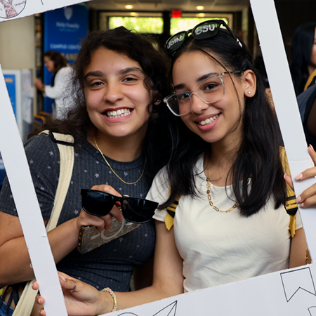
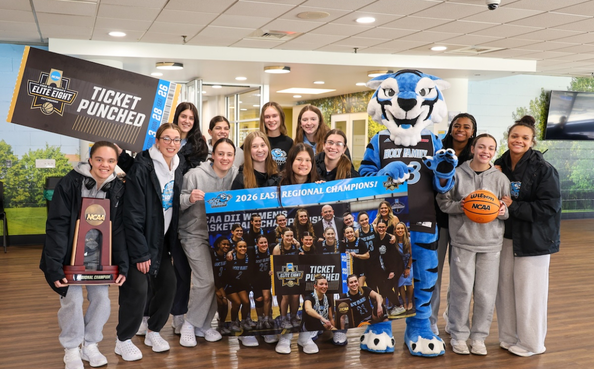
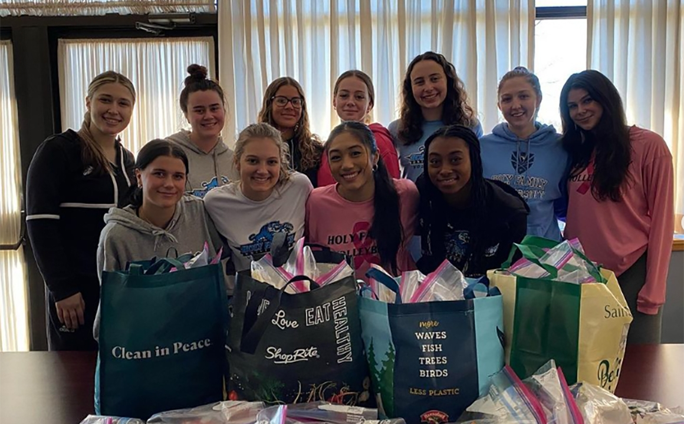

18
NCAA Division II varsity teams
Central Atlantic Collegiate Conference, nine men's and nine women's programs.




Eighteen NCAA Division II teams. Twenty-five clubs and organizations. Two campuses — Philadelphia and Newtown — held together by a community rooted in faith, scholarship, and service.


The shape of student life at Holy Family is small enough that numbers stay honest. Every figure below is drawn from the Fall 2025 student affairs report and the RFP fact pack.
The campus holds four rhythms at once. Use the tabs to move between them — each panel pulls a single component from the shared library so the vocabulary stays consistent across the site.
| Sport | Team | Season | Conference | Home venue |
|---|---|---|---|---|
| Basketball | Men's | Winter | CACC | Campus Center Arena |
| Basketball | Women's | Winter | CACC | Campus Center Arena |
| Soccer | Men's | Fall | CACC | Newtown Athletic Fields |
| Soccer | Women's | Fall | CACC | Newtown Athletic Fields |
| Volleyball | Women's | Fall | CACC | Campus Center Arena |
| Cross Country | Men's & Women's | Fall | CACC | Pennypack Park course |
| Softball | Women's | Spring | CACC | Newtown Athletic Fields |
| Baseball | Men's | Spring | CACC | Newtown Athletic Fields |
Table shows eight of the eighteen varsity teams for layout purposes. Final site will render the full roster with coach names, drawn from HFU Athletics' internal directory — figures here are representative, not a published roster.
The student chapter for nursing majors across Holy Family's undergraduate nursing programs, coordinating peer support, community-health engagement, and career events.
A Holy Family chapter of the national service organization, open to undergraduates across both campuses.
A pre-professional society for students preparing for nursing, medical, dental, physician assistant, and allied health pathways.
A peer-supported community for students in or seeking recovery, hosted through the Center for Wellness and Spirituality.
Competitive and casual gaming teams organized through Campus Recreation, with open tryouts each fall.
Student-run sport clubs and intramural leagues that meet the middle ground between intercollegiate athletics and casual play.
The office that connects coursework to service partnerships in Philadelphia and Newtown, and coordinates student-led civic projects.
Six organizations drawn from the Student Experience page at holyfamily.edu. The final site will render the full directory from Student Affairs.
A representative year of service at Holy Family, coordinated through Civic Engagement & Service Learning and Campus Ministry. The final site will integrate with Campus Ministry's service-hours tracking so the page updates automatically as each term closes.
Campus Ministry at Holy Family is rooted in the Nazareth tradition the Sisters of the Holy Family brought to Torresdale in 1954.
Daily Mass is offered in the Chapel of the Holy Family on the Philadelphia campus. The Mass of the Holy Spirit opens the academic year each September, and a Baccalaureate Mass closes it each May. The Center for Wellness and Spirituality coordinates retreats, service opportunities, and interfaith programming — students of all faiths, and of none, are welcome.
Sourced from the Student Experience and Campus Ministry pages at holyfamily.edu.
The most common housing questions, answered without the recruiting gloss. Residence Life staff live on site and can walk any question through further.
Holy Family organizes the undergraduate experience around three support structures — each described on the Student Experience page. Together they move students from the first week on campus to graduation and into the profession.
A dedicated program that guides students from high school to college — building the independence and confidence that carry through the rest of the degree.
Coursework, tutoring, and coaching designed to develop learning proficiencies and self-advocacy — the habits a student draws on in the classroom and after it.
Every undergraduate participates in an internship or experiential learning opportunity before they graduate — connecting the degree to the profession it prepares them for.
The three pathways and their language are drawn from the Student Experience page at holyfamily.edu.
A walk through the year at Holy Family — from orientation on the Philadelphia campus, through the Mass of the Holy Spirit, to commencement at the Campus Center. All photographs on this page are pulled from holyfamily.edu.
The clearest way to understand what student life feels like at Holy Family is to spend a morning here. Tours run most weekdays at 10 and 1, with open-house weekends on select Saturdays each semester.
A small slice of what the Office of Student Engagement has on the books. The live site will pull from the university calendar feed so this section updates without hand editing.
Three events chosen to show the component in use. Dates are accurate to the Fall 2025 / Spring 2026 academic calendar; the live site will replace this handwritten list with a feed from the university calendar system.